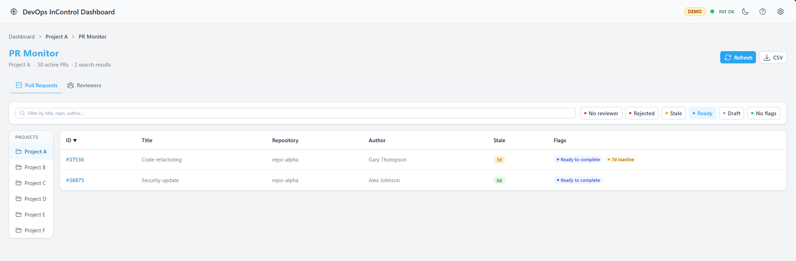
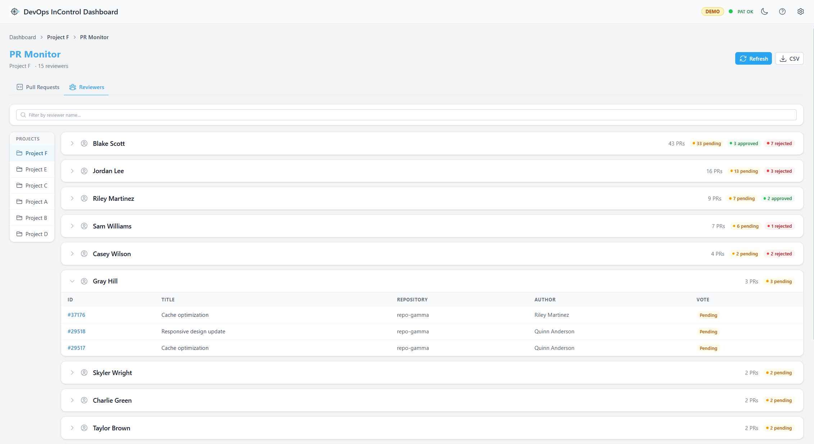

PR Details
When you click a project card on the PR Monitor, you see the full list of active pull requests for that project. Use this screen to filter, sort, and inspect individual PRs.

Pull request list with flag columns.
How to Use It
- Use the Search bar to find PRs by title, repository, or author.
- Click the flag filter buttons at the top to show only PRs with a specific flag (e.g. only Stale or only Unreviewed).
- Click a column header to sort the table (e.g. by days inactive).
- Click a PR number to open it directly in Azure DevOps.
What the Table Columns Mean
| Column | Description |
|---|---|
| PR ID | The pull request number. Click to open in Azure DevOps. |
| Title | The PR title. A Draft badge appears for draft PRs. |
| Repository | Which Git repository the PR belongs to. |
| Author | Who created the pull request. |
| Days inactive | How many days since the last activity (comment or code push). Higher values stand out more. |
| Flags | Coloured labels indicating issues (see PR Monitor for colour meanings). |
Features
- Refresh — Click to reload the pull request list from Azure DevOps.
- Pagination — Use the page controls at the bottom if there are many PRs.
Reviewers Tab
Switch to the Reviewers tab to see a bottleneck analysis of who has the most pending reviews. This helps identify team members who may be blocking PR throughput.
- Each reviewer is listed with their total pending review count.
- Reviewers with the most pending PRs appear at the top — these are potential bottlenecks.
- Use this view to redistribute review load or follow up with overloaded reviewers.

The Reviewers tab showing pending review counts per person.
Tip
"Days inactive" counts calendar days since the most recent action on the PR — this could be its creation, the last code push, or the last comment, whichever is most recent.